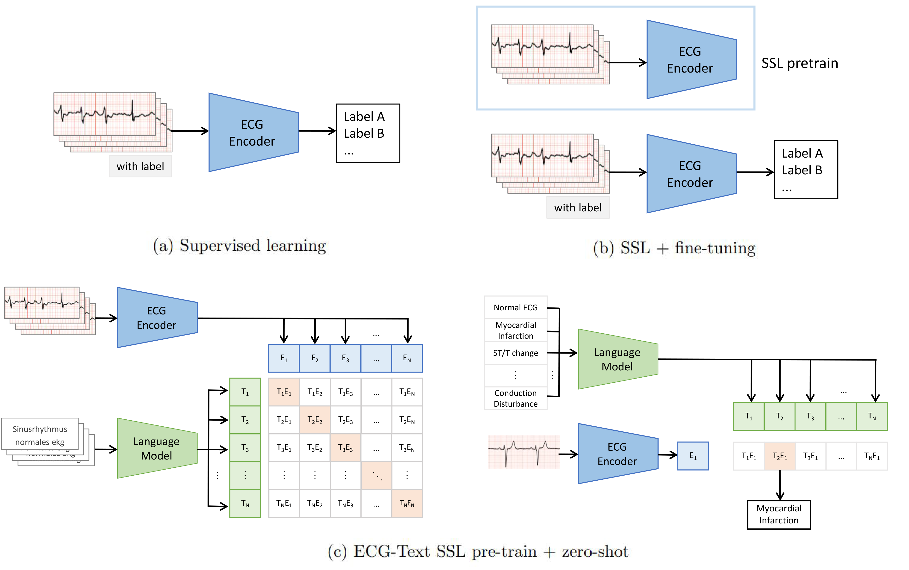
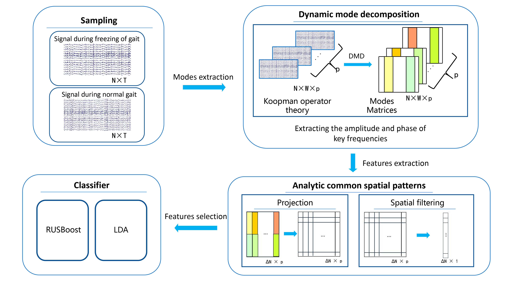

|
Research Topics
My research focuses on the intersection of artificial intelligence, computational clinical research, and temporal medical data, with a particular interest in multimodal learning for healthcare and physiological signal analysis. The goal of my research is to investigate how machine learning frameworks can be used to aid, understand and integrate multimodal clinical medical data.
|
|
Publications
(* equal contribution)
|
Frozen Language Model Helps ECG Zero-Shot Learning
Jun Li*, Che Liu*, Sibo Cheng, Rossella Arcucci, Shenda Hong
Medical Image in Deep Learning (MIDL), 2023,(Oral Presentaion)
ArXiv

The electrocardiogram (ECG) is one of the most commonly used non-invasive, convenient medical monitoring tools that assist in the clinical diagnosis of heart diseases. Recently, deep learning (DL) techniques, particularly self-supervised learning (SSL), have demonstrated great potential in the classification of ECG. SSL pre-training has achieved competitive performance with only a small amount of annotated data after fine-tuning. However, current SSL methods rely on the availability of annotated data and are unable to predict labels not existing in fine-tuning datasets. To address this challenge, we propose Multimodal ECG-Text Self-supervised pre-training (METS), the first work to utilize the auto-generated clinical reports to guide ECG SSL pre-training. We use a trainable ECG encoder and a frozen language model to embed paired ECG and automatically machine-generated clinical reports separately. The SSL aims to maximize the similarity between paired ECG and auto-generated report while minimize the similarity between ECG and other reports. In downstream classification tasks, METS achieves around 10% improvement in performance without using any annotated data via zero-shot classification, compared to other supervised and SSL baselines that rely on annotated data. Furthermore, METS achieves the highest recall and F1 scores on the MIT-BIH dataset, despite MIT-BIH containing different classes of ECG compared to the pre-trained dataset. The extensive experiments have demonstrated the advantages of using ECG-Text multimodal self-supervised learning in terms of generalizability, effectiveness, and efficiency.
|
EEG Detection and Prediction of Freezing of Gait in Parkinson's Disease Based on Spatiotemporal Coherent Modes
Jun Li, Yuzhu Guo
Submitted to IEEE Journal of Biomedical and Health Informatics (JBHI), Under the second round of minor revision , 2023
TechRxiv

Freezing of gait (FOG) in the Parkinson's disease has a complex mechanism and is closely related brain activities. Timely prediction of FOG is crucial to fall prevention and injury avoidance. Traditional electroencephalogram (EEG) processing methods extract time, spatial, frequency, or phase information separately and use them or their combinations, which fragment the connections among these heterogeneous features and cannot completely characterize the whole brain dynamics during the occurrence of FOG. In this study, dynamic spatiotemporal coherent modes during the FOG were studied and the associated FOG detection and prediction were proposed. For capturing the changes of the brain, dynamic mode decomposition (DMD) method was applied. Dynamic changes of the spatiotemporal modes in both amplitude and phase of motor-related frequency bands were analyzed and an analytic common spatial patterns (ACSP) was used as a spatial filter to extract the essential differences among the normal, freezing and transitional gaits. The proposed method was verified in practical clinical data. Results showed that in the detection task, the DMD-ACSP achieved an accuracy of 89.1 ± 3.6% and sensitivity of 83.5 ± 4.3%, respectively. In the prediction task, an 83.5 ± 3.2% accuracy and 86.7 ± 7.8% sensitivity were achieved. Comparative studies showed that the DMD-ACSP method significantly improves the FOG detection and prediction performance. Moreover, the DMD-ACSP reveals the spatial patterns of dynamic brain functional connectivity which best discriminate the different gaits. The spatiotemporal coherent modes may provide useful indication for transcranial magnetic stimulation neuromodulation in medical practices.
|
|
JiZou Intelligence —— Intelligent Piano Education System 「极奏智能」
|
|
Video
An Intelligent Piano Education System based on the multi-modal deep learning. Computer vision, Music AI and photoelectric sensors are used to improve the quality of piano teaching.
Committed to promoting piano education to children who are not rich but love piano.
|
|
{kind=link}